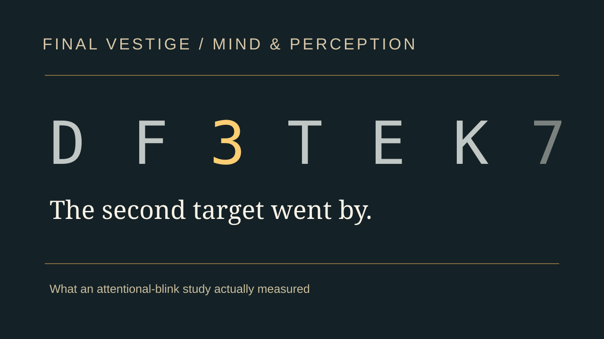

Final Vestige Studios · Free Focus Fieldbook
Optional 42-second visual explanation: poster, captions and transcript (production concept)

42-second original film plan
Visuals: 0–8s show a calm stationary string of letters; 8–16s briefly highlight a first number; 16–24s reveal a second; 24–32s separate the study from the seller claim; 32–42s show the free source and Focus route. Silent on load. Captions: timed WebVTT script.
Full readable transcript
Two numbers flash in a stream of letters. You catch the first. The second slips by. Researchers call that the attentional blink: processing the first target can make the next harder to report. In 2007, a small study found changes after three months of intensive meditation. But the researchers did not test a twelve-minute commercial audio. That gap matters. Explore the original experiment, try a free observation exercise, and judge the evidence before any offer. Final Vestige: source before story.
Production status: storyboard only. No video asset or media claims to have been tested.
Can twelve minutes of audio substitute for meditation?
The interesting research isn’t about a magic soundtrack. In 2007, people attending an intensive three-month meditation retreat became better at detecting a second target in a rapid stream of symbols. The researchers tested attention and recorded brain activity. They did not test Zen12—or establish that any recording replaces an hour of practice.
Read the original PLOS Biology study · Read the original attentional-blink study
What you can do for free today
Pick one ordinary task, write down what “done” means, and work on it for eight minutes. Spend four more minutes noting what actually happened, what interrupted you and what you only assumed. Repeat on another day. That is not a clinical test of meditation, but it gives you a baseline before you pay for a listening routine.
Get the existing free Seven Day Focus Fieldbook—the complete 52-page workbook with its audio-claims checklist, through the existing Jetpack/Dispatch route. No separate signup or subscription is created here.
What the seller describes
Zen12 is presented by Inspire3 as a structured audio meditation program. The seller’s standard order page describes twelve levels, 48 downloadable MP3s, a guide and user manual, support material and an advertised one-year money-back promise. These are seller descriptions, not a Final Vestige product test. Check the actual checkout contents and written refund conditions before purchasing.
The claim we cannot validate
The seller markets a 12-minute session as delivering an hour of meditation and invokes brainwave entrainment. The 2007 meditation experiment involved experienced people spending 10–12 hours each day at a retreat for three months; it tested neither a soundtrack nor this product. It cannot support an equivalence claim, a guaranteed cognitive result or a medical benefit. We omit those assertions from our recommendation.
Five questions to answer before paying
- What am I buying? Confirm the twelve-level/48-MP3 listing and whether extras apply to the checkout you see.
- What is the actual price? Different official routes have displayed different amounts. Do not assume a quoted price, coupon, countdown or tax treatment applies to you.
- How does the refund work? Seller advertises a one-year promise; examine the written conditions and support process yourself. We have not tested refund delivery.
- Can I use it comfortably? Check listening equipment, volume, accessibility and whether audio is appropriate for you. Stop if uncomfortable.
- Does the free alternative meet my need? If you mainly want a way to begin focused work, the free Fieldbook may be sufficient.
Our current recommendation
Try the free observation exercise first. Consider Zen12 only if you want the format of guided audio and are satisfied with verified checkout terms. Do not purchase on the expectation that it has been independently proved to cure symptoms, increase wealth, replace medical treatment or reproduce a three-month retreat.
Optional seller offer — not yet enabled
Affiliate disclosure: If a buying link is eventually approved and you purchase through it, Final Vestige may earn a commission at no additional cost to you. This draft does not contain an earning link.
Not available: publisher approval, permitted channels, the issued tracked URL, and referred-checkout terms have not been authenticated. No purchase is possible through this control.
Source trail
Official standard seller order description (non-affiliate reference) · Inspire3 catalog · FTC disclosures · FTC claim substantiation. The research findings above concern the particular studies, not this product.
Unpublished source-controlled draft • November 15, 2026 • No commercial activation, no user tracking, no JavaScript. Optional media storyboard is not a real video.